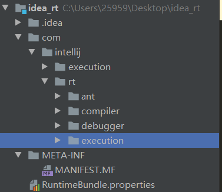

前言
在前面的博客中，我写过一句话，叫做
Java世界里的一切东西都是在拼Java命令行参数
如果你使用IDEA，并且在运行 Java 代码时观察过 IDEA 帮我们拼出来的命令行参数，举个例子
D:\jdk8\jdk1.8.0_232\bin\java.exe "\"-javaagent:C:\Program Files\JetBrains\IntelliJ IDEA 201.4865.12\lib\idea_rt.jar=61840:C:\Program Files\JetBrains\IntelliJ IDEA 201.4865.12\bin\"" -Dfile.encoding=UTF-8 -classpath ( 省略一系列依赖Jar包 ) C:\Users\25959\Desktop\test\target\classes com.ayang818.test.Test |
这是我运行一个很简单的程序，IDEA 帮我们拼出来的命令行参数，其中 -Dfile.encoding 和 -classpath 我们都很熟悉，一个是指定编码方式，另一个是指定 classpath 路径。但是有一个我们可能很陌生的参数，叫做 -javaagent ， agent 翻译成中文是代理的意思。于是我开始了一天的探究过程。
过程
首先我追踪了上面的代码中 -javaagent 后面的Jar包。
C:\Program Files\JetBrains\IntelliJ IDEA 201.4865.12\lib\idea_rt.jar |
这里申明一下，我使用的 IDEA 版本是 201.4865.12 EAP版本，属于内测版类型。如果有想自己探究一下的同学，发现代码不一样，可能是版本的问题。
首先解压这个Jar包
jar xvf idea_rt.jar |
然后打开解压后的目录。目录结构如下

首先查看 MANIFEST.MF 文件下的内容（这里就开始涉及到Instrument的内容了），有一个字段如下。
Premain-Class: com.intellij.rt.execution.application.AppMainV2$Agent |
这个字段叫做 Premain-Class ，我们知道在运行Java程序的时候，都会有一个 main 方法，这和我们的猜想相符合，我们的猜想就是 IDEA 在编译运行程序之前（pre）做了一些什么事情。我们顺着包名进到这个类读一读源码来一探究竟。
public static class Agent { |
Agent 这个类是 AppMainV2 类下的一个静态内部类。它的 premain 方法调用了 AppMainV2 的 premain 方法。值得注意的是，Agent 的 premain方法中有一个 Instrumentation 类型的参数，这个待会再提。顺着源码找下去，找到 AppMainV2 的 premain 方法。
public static void premain(String args) { |
首先AppMainV2 的 premain 方法，对传入的参数做了一个分割，58转化为 char 类型是 : ，观察 IDEA 启动时通过 -javaagent 传入的参数
-javaagent:C:\Program Files\JetBrains\IntelliJ IDEA 201.4865.12\lib\idea_rt.jar=61840:C:\Program Files\JetBrains\IntelliJ IDEA 201.4865.12\bin\"" |
可以知道
args.substring(p + 1) // C:\Program Files\JetBrains\IntelliJ IDEA 201.4865.12\bin\"" |
是 IDEA 的路径
args.substring(0, p) // 61840 |
是启动时的端口号。
private static boolean loadHelper(String binPath) { |
查看 loadHelper 方法，可以看到这里是在加载 操作系统信息，以及通过处理器的位数来 load 不同的 .dll 文件 (C# 中类似 jar 包的东西)。
然后看到 startMonitor 方法
private static void startMonitor(final int portNumber, final boolean helperLibLoaded) { |
这些代码都很简单，这段代码创建了一个守护进程，在这个进程中创建了一个 Socket 用来监听 Java 进程运行的端口，然后接受 Java 进程端口发出来的一些信息，比如程序输出，异常堆栈等等，然后输出到 IDEA 的命令行中，这也非常好理解。
这就是这段 IDEA 帮我们传入的 -javaagent 参数做的事情，它做的事情非常像 AOP（面向切面编程）。我们在写 Java 的时候通过动态代理来实现 AOP ，从而实现不在功能模块中添加代码，就可以对这个功能增加辅助功能的工作，比如 记录方法运行时间、输出日志等。-javaagent 也做到了这件事，它使用的是 Java 5中的 Instrumentation 机制。
Instrumentation 能力
说实话，我没找到 Instrumentation 的准确翻译，我把它翻译作 插装 —— 在主程序前，插入一些新的能力。
前面说，Instrumentation 和 AOP 很想，这样的特性实际上提供了一种虚拟机级别支持的 AOP 实现方式，使得开发者无需对 JDK 做任何升级和改动，就可以实现某些 AOP 的功能了。
Instrumentation 的最大作用，就是类定义动态改变和操作。在 Java SE 5 及其后续版本当中，开发者可以在一个普通 Java 程序（带有 main 函数的 Java 类）运行时，通过 – javaagent参数指定一个特定的 jar 文件（包含 Instrumentation 代理）来启动 Instrumentation 的代理程序。
在 Java SE 5 当中，开发者可以让 Instrumentation 代理在 main 函数运行前执行。简要说来就是如下几个步骤：
编写 premain 函数
public static void premain(String agentArgs, Instrumentation inst);
在这个 premain 函数中，开发者可以进行对类的各种操作。
agentArgs 是 premain 函数得到的程序参数，随同 “– javaagent”一起传入。与 main 函数不同的是，这个参数是一个字符串而不是一个字符串数组，如果程序参数有多个，程序将自行解析这个字符串。
Inst 是一个 java.lang.instrument.Instrumentation 的实例，由 JVM 自动传入。java.lang.instrument.Instrumentation 是 instrument 包中定义的一个接口，也是这个包的核心部分，集中了其中几乎所有的功能方法，例如类定义的转换和操作等等。
打包 Jar 文件
将这个 Java 类打包成一个 jar 文件，并在其中的 manifest 属性当中加入” Premain-Class”来指定步骤 1 当中编写的那个带有 premain 的 Java 类。（可能还需要指定其他属性以开启更多功能），这和我们之前看 IDEA 里的代码目录结构是一样的。
运行
用如下方式运行带有 Instrumentation 的 Java 程序：
java -javaagent:jar 文件的位置 [= 传入 premain 的参数 ]
对 Java 类文件的操作，可以理解为对一个 byte 数组的操作（将类文件的二进制字节流读入一个 byte 数组）。开发者可以在“ClassFileTransformer”的 transform 方法当中得到，操作并最终返回一个类的定义（一个 byte 数组）。这方面，Apache 的 BCEL 开源项目提供了强有力的支持，读者可以在参考文章 Java SE 5 特性 Instrumentation 实践 中看到一个 BCEL 和 Instrumentation 结合的例子。
具体关于替换字节码的操作，其实也不算难，但是这里就不是本文的重点了。
关于 Java 6 中一些新功能，比如虚拟机启动后的动态 Instrument （alibaba 著名的开源项目 arthas 很多功能，比如说热更新代码，虚拟机监控等等都是基于此开发），这篇文章就不再赘述。
参考文章 1. JAVA 拾遗 –Instrument 机制 2. Java SE 6 新特性
Instrumentation 新功能 3. Alibaba-Arthas